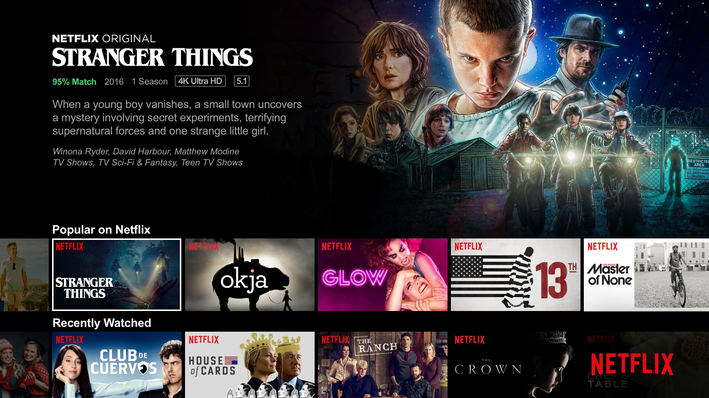

Netflix est une entreprise internationale américaine créée à Scotts Valley en 1997 par Reed Hastings et Marc Randolph appartenant au secteur d'activité des industries créatives. Elle est spécialisée dans la distribution et l'exploitation d'œuvres cinématographiques et télévisuelles par le biais d'une plateforme dédiée au service de vidéo à la demande. Son siège social se situe à Los Gatos en Californie.
Initialement, l'entreprise était uniquement présente dans le secteur de l'exploitation commerciale par la fourniture d'un service en ligne de location et d'achat de DVD livrés à domicile. Elle a ensuite proposé la location moyennant un abonnement mensuel.
Son service de vidéo à la demande par abonnement commence en 2007. Depuis, l'entreprise s'est lancée dans la distribution d'un grand nombre de films et de séries télévisées, des créations originales auxquelles elle consacre des investissements de plus en plus importants.
En outre, Netflix fait l'objet de débats quant à sa légitimité dans ce secteur d'activité, car elle est issue de la technopole de la Silicon Valley (Netflix fait d'ailleurs partie des entreprises dites des « géants du Web ») et non pas du berceau historique du cinéma américain qu'est le quartier d'Hollywood.
D'une manière générale, l'entreprise participe à une mutation des méthodes de consommation et de production des contenus audiovisuels de plus en plus tournées vers la délinéarisation. Pionnière dans le secteur de la vidéo à la demande par abonnement, Netflix est concurrencée en France et dans le monde par d'autres firmes du cinéma et de la télévision, mais également des télécommunications et du commerce électronique.
L'expression « programme original Netflix », souvent employée pour parler du contenu de cette plateforme, ne signifie pas forcément que le programme a été produit par Netflix, mais qu'il a été labellisé « Original Netflix », c'est-à-dire distribué exclusivement sur les sites de streaming par Netflix, dans tout ou partie des pays où la plateforme est disponible. À travers le succès planétaire de certains de ses programmes originaux, films ou séries, Netflix, qui possède également ses propres studios de tournage et d'animation et diffuse des productions de nombreux pays dans leur langue originale (comme en 2021, la série française Lupin ou la série sud-coréenne Squid Game), ne cesse d'augmenter son nombre d'abonnés dans le monde, lequel, en dépit d'un ralentissement, dépassait 220 millions en 2022, avec plus de 5000 programmes et un nouvel abonnement moins cher, mais soumettant le spectateur à de la publicité.
